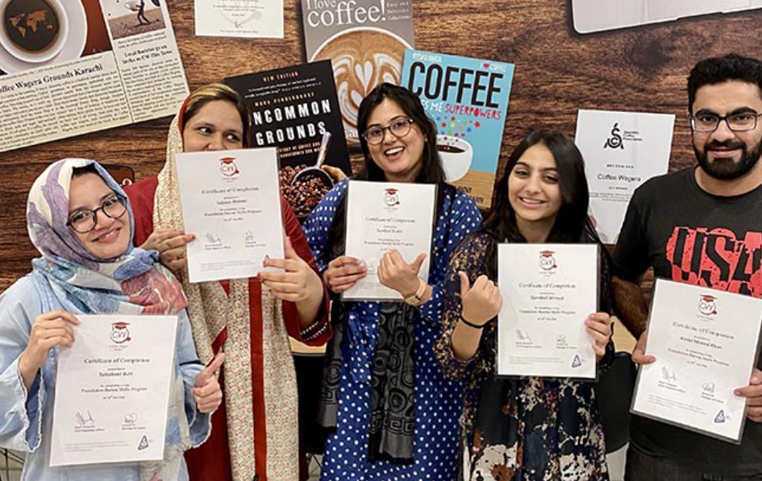

Join our hands-on Barista Training Program and learn the art of brewing
the perfect cup — from espresso pulling to latte art!
Whether you’re a beginner or a coffee enthusiast looking to go
professional, our training will elevate your skills.
First Things First
This only happens in Karachi.
The fee is Rs.25,000 per person
We don’t offer or guarantee any jobs.
You will get a Certificate of Participation.
The dates and timing are provided in the
FORM below.
The training is 15 hours, usually 3 hours a day for five days.
Not affiliated with any local or international organization.
Includes theory and practical both. The contents are given
below…

Theory Sessions
History of Coffee & Basic roast profiles
Single-origin vs Blend
Instant vs Brewed Coffee
Fresh roast vs old roast
Commercial vs home brewed
Basic types of coffee and beans
Parts of the machine and barista tools
Factors required for brewing: Temperature, Pressure, Time